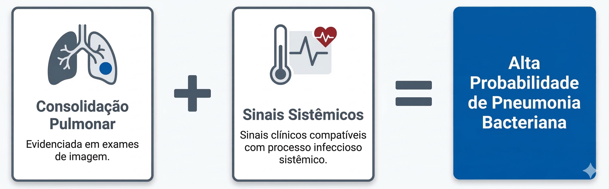

Infecções respiratórias
As infecções respiratórias constituem uma das causas mais frequentes de prescrição de antibacterianos na prática clínica. Entretanto, uma parcela significativa dos quadros respiratórios agudos é causada por vírus respiratórios ou por processos inflamatórios não infecciosos, situações nas quais o uso de antibacterianos não traz benefício clínico.
O primeiro passo do raciocínio clínico é avaliar a plausibilidade de infecção bacteriana. Sintomas como tosse, febre e mal-estar são comuns em diversas infecções respiratórias, mas isoladamente não permitem distinguir etiologia viral de bacteriana. A presença de consolidação pulmonar em exames de imagem, associada a sinais clínicos compatíveis com processo infeccioso sistêmico, aumenta significativamente a probabilidade de pneumonia bacteriana.
Elementos que aumentam a probabilidade de pneumonia bacteriana
Clique nos blocos do esquema para explorar o raciocínio clínico.

A combinação entre achados radiológicos e sinais clínicos sistêmicos aumenta a plausibilidade de pneumonia bacteriana.
Elemento selecionado
Consolidação pulmonar
A consolidação pulmonar em exames de imagem aumenta a probabilidade de pneumonia bacteriana quando ocorre em contexto clínico compatível. Isoladamente, porém, um achado de imagem não deve ser interpretado sem correlação com a apresentação do paciente.
Entre os agentes mais frequentemente associados à pneumonia adquirida na comunidade destacam-se Streptococcus pneumoniae e Haemophilus influenzae, além de patógenos respiratórios denominados atípicos em determinados contextos clínicos. A distribuição etiológica varia conforme idade, presença de doença pulmonar estrutural, comorbidades e gravidade da apresentação.
Uma vez estabelecida a plausibilidade de infecção bacteriana, a escolha inicial do espectro antimicrobiano deve considerar o risco individual de resistência. Em pacientes jovens, sem comorbidades relevantes e sem exposições recentes ao sistema de saúde, a probabilidade de patógenos multirresistentes costuma ser baixa. Nessas situações, não há justificativa para ampliar desnecessariamente o espectro antimicrobiano.
Por outro lado, idade avançada, doença pulmonar crônica, hospitalizações recentes ou uso prévio de antibacterianos podem modificar a probabilidade etiológica e aumentar o risco de resistência bacteriana. Esses fatores devem ser considerados na definição da estratégia inicial.
Em pacientes hospitalizados, a coleta de amostras para investigação microbiológica pode auxiliar na identificação do agente etiológico. Quando um microrganismo é identificado e apresenta perfil de suscetibilidade favorável, o estreitamento terapêutico permite reduzir a exposição desnecessária a antibacterianos de amplo espectro.
A abordagem das infecções respiratórias ilustra dois erros frequentes na prática clínica: a prescrição de antibacterianos para quadros virais autolimitados e a ampliação desnecessária do espectro em situações de baixo risco de resistência. Em ambos os casos, o prejuízo não está apenas na ausência de benefício clínico adicional, mas também no aumento da toxicidade potencial e da pressão seletiva sobre a microbiota.
O raciocínio adequado nas infecções respiratórias começa pela confirmação da plausibilidade de infecção bacteriana, passa pela estimativa de risco de resistência e evolui conforme dados clínicos e microbiológicos se tornam disponíveis.